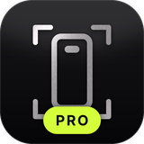
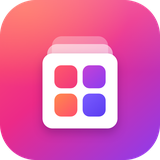

Free and open source tweaks by T4MAG0.
Or add this source by hand:https://iamjhe08.github.io/repo/
https://iamjhe08.github.io/repo/
VidGrab
SafariModernizer
Premium tweaks, available from the Havoc repo.

